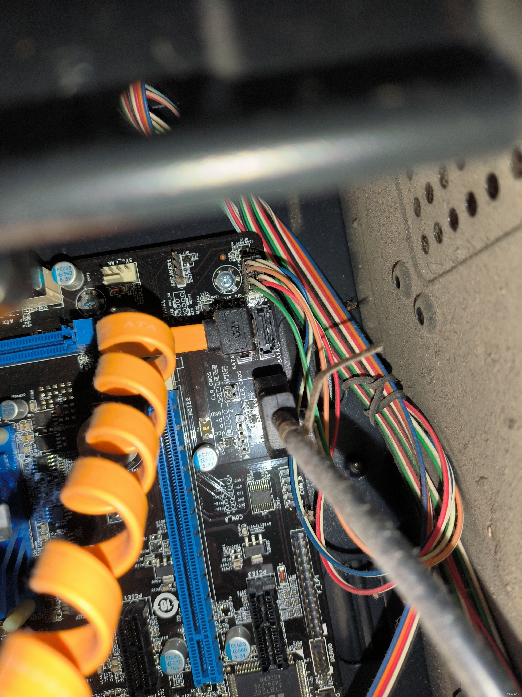
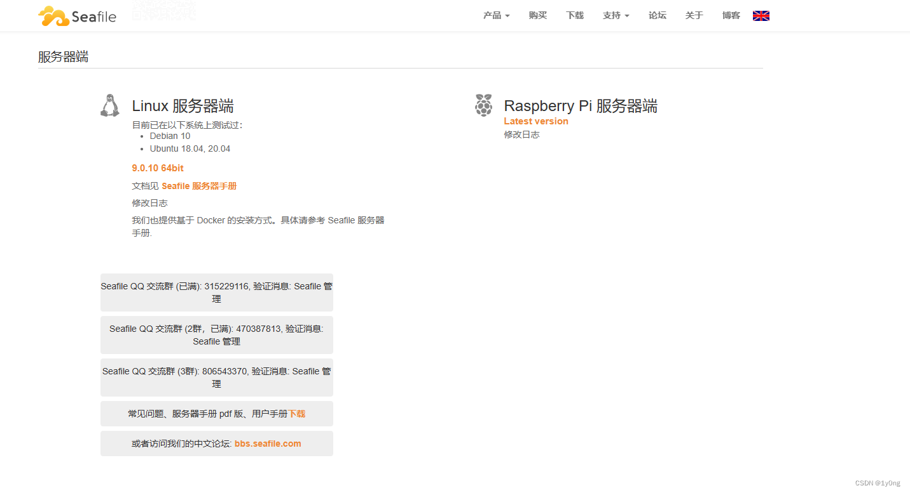
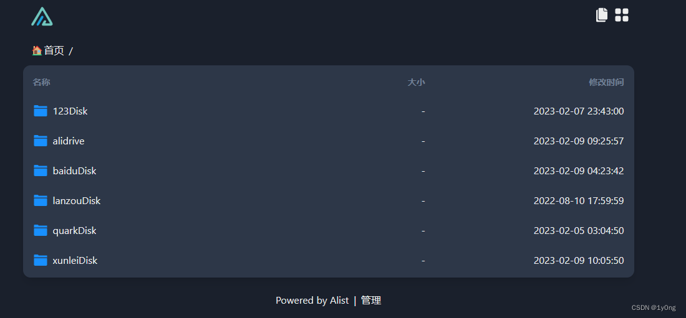

背景
家里有一台十年前的空闲主机，处理器是赛扬j1900，主板是梅捷SY-1900，平时没怎么使用，正好主板上空着一个sata2接口的硬盘位，就想着废物利用，搭建一个属于自己的私人网盘

seafile
一开始只对seafile有了解，所以没有考虑其他的网盘系统就直接开始搭建seafile了，seafile的部署和使用比较简单，在win7上部署可以参考下面这位大佬的文章（要自己去获取seafile-server_5.0.3_win32.tar.gz的资源）
https://blog.csdn.net/wwwwestcn/article/details/122424469
seafile在windows上的搭建方法比较简单，整个过程没有遇到什么太难的问题，接下来就我自己的体验来谈谈seafile的优缺点
优点：
1.支持多平台客户端访问、连手机都有专业的app
2.对本地储存的数据进行了加密、无法在本地进行查看（这一点因人而异，我认为是优点）
3.访问时必须要输入密码，提高了数据的安全性
缺点：
1.大于30M的数据只能下载不能在线预览，想要线上看视频基本上是不可能的了（这是后来换alist的主要原因）
2.windows版本的服务端已经停止更新了，只能自己去找老的版本下载
3.配置有些复杂，访问是用的8000端口、上传是用的8082端口，意味着进行端口转发或者配置反代理服务器的时候需要同时对两个端口进行操作

alist
发现seafile的缺点以后，就一直在找其他支持预览大体积文件的私人网盘系统，最终看到了其他博主搭建的alist网盘，发现对预览视频大小没有限制就开始部署alist了
alist的部署更加简单，具体可以看这位博主的文章
Alist搭建_「已注销」的博客-CSDN博客_alist搭建教程
同样讲一下alist的优缺点
优点：
1.搭建简单、配置也不麻烦、页面简易美观
2.支持大体积文件的在线预览、不用下载也能观看
缺点：
1.没有客户端工具只能通过网页端访问资源
2.默认内容对所有访问用户开放、隐私的内容和相关密码需要自己配置
3.可以通过图片视图大致预览图片列表、希望视频也能有个封面查看
4.有点“重”，内容多的话要加载很久
这里alist的缺点很多，主要也是因为用alist的体验比较久，但目前来说我对alist的使用是比较满意的，并且alist还支持和百度网盘、阿里网盘、onedrive等知名网盘的联动
alist的安全问题
利用黑暗搜索引擎对含有alist的特征网页进行搜索

可以看到搜索结果多达一万多条，说明使用alist的用户群还是比较大的，而alist搭建过程中如果管理员没有进行特殊配置的话，所上传的内容是默认对所有访客用户开放的，也就是说你上传的文件没有经过隐私处理就直接暴露在了公网上的话，所有人都可以看到你的文件，如果此时又挂载了百度网盘等其他云储存服务，那么这些网盘中的内容也同样是对外开放的，而这些网盘一般都有同步手机信息、相册、聊天记录等功能，所以极易造成个人隐私泄漏

（上图是搜索结果中随意点开的一个网页，可以看到网页挂载了很多的网盘，网盘里的内容所有人可见）
为了防止这种隐私泄漏，我们需要对隐私文件进行加密或隐藏，加密方法在alist的说明文档中有
同时也可以参考下面这位up主的视频
【Alist】Alist的四大功能使用教程_哔哩哔哩_bilibili
最后
搭建私人网盘一定要注意个人信息不被泄露，最好不要直接暴露在公网上，想要访问的话可以通过内网穿透工具实现。